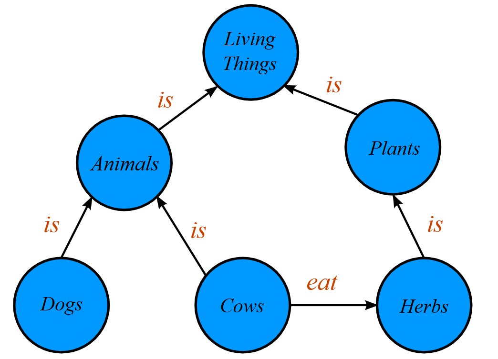

Module 5: Graph RAG#
Part of the RCD Workshops series: Retrieval-Augmented Generation (RAG) for Advanced Research Applications
So far, retrieval found text snippets. What if your knowledge isn’t just documents—but a knowledge graph?
from utils import create_answer_box
create_answer_box('Describe your level of familiarity with knowledge graphs.', question_id='mod4_knowledge_graph_background')
Describe your level of familiarity with knowledge graphs.
What is Graph RAG?#
A knowledge graph (KG) organizes data as entities (nodes) and relationships (edges): facts like (Subject —relation→ Object). Graphs let you represent links across topics and discover answers even when no single document states them directly.

5.1 Why Knowledge Graphs?#
Multi-hop answers: Answer questions that require tracing connections (e.g., “Which startups were founded by former Google employees?”).
Structured queries (SPARQL, Cypher): Let LLMs generate graph queries from user input.
Context beyond text: Some info is implicit and scattered across documents, but explicit in the graph.
5.2 Approaches#
Vector-based retrieval over nodes/edges: Treat node/edge texts as documents; embed and run semantic search (baseline RAG, but on graph content).
Prompt-to-Graph Query: Use the LLM to translate the user’s question to a graph query (e.g. SPARQL/Cypher), then fetch subgraph to answer.
Hybrid: Use vectors to find graph entities, then expand by graph traversal.
5.3 Hands-on Demo: Building/Querying a Knowledge Graph#
Let’s use NetworkX to create and query a tiny toy KG.
Dataset: Demo Corpus#
We will use a tiny mixed-domain corpus (AI, Climate, Biomedical, Materials) stored in data/demo_corpus.jsonl.
from pathlib import Path
import pandas as pd
DATA_PATH = 'data/demo_corpus.jsonl'
df = pd.read_json(DATA_PATH, lines=True)
docs = df.to_dict('records')
print(f'Loaded {len(docs)} docs from {DATA_PATH}')
display(df[['id','title','year','authors','topics']].head())
Loaded 18 docs from data/demo_corpus.jsonl
| id | title | year | authors | topics | |
|---|---|---|---|---|---|
| 0 | 2508.05366 | Can Language Models Critique Themselves? Inves... | 2025 | [Samy Ateia, Udo Kruschwitz] | [NLP, Retrieval, Language Model, Biomedical] |
| 1 | 2508.07326 | Nonparametric Reaction Coordinate Optimization... | 2025 | [Polina V. Banushkina, Sergei V. Krivov] | [ML, Climate] |
| 2 | 2508.07654 | MLego: Interactive and Scalable Topic Explorat... | 2025 | [Fei Ye, Jiapan Liu, Yinan Jing, Zhenying He, ... | [Databases, IR] |
| 3 | 2508.07798 | Generative Inversion for Property-Targeted Mat... | 2025 | [Cheng Li, Pengfei Danga, Yuehui Xiana, Yumei ... | [Materials, ML] |
| 4 | 2508.08140 | Data-Efficient Biomedical In-Context Learning:... | 2025 | [Jun Wang, Zaifu Zhan, Qixin Zhang, Mingquan L... | [NLP, Retrieval, Language Model, Biomedical] |
import networkx as nx
# Build a heterogeneous graph from the demo corpus: Authors, Papers, Topics
G = nx.DiGraph()
# Limit to a small subset for readable visualization
MAX_PAPERS = 20
records = df.head(MAX_PAPERS).to_dict('records')
for rec in records:
pid = rec.get('id')
title = rec.get('title', '')
year = rec.get('year')
topics = rec.get('topics', []) or []
authors = rec.get('authors', []) or []
# Paper node
G.add_node(pid, type='Paper', title=title, year=year)
# Author -> Paper edges
for author in authors:
G.add_node(author, type='Author')
G.add_edge(author, pid, relation='authored')
# Paper -> Topic edges
for topic in topics:
G.add_node(topic, type='Topic')
G.add_edge(pid, topic, relation='has_topic')
print(f'Graph built: {G.number_of_nodes()} nodes, {G.number_of_edges()} edges')
print('Node types:', {t for t in set(nx.get_node_attributes(G, 'type').values())})
Graph built: 111 nodes, 140 edges
Node types: {'Author', 'Topic', 'Paper'}
5.3.1 Visualizing the Graph#
A quick view of the nodes (Researchers vs Papers) and edge relations.
import matplotlib.pyplot as plt
from matplotlib.lines import Line2D
import numpy as np
# Layered radial layout: Topics outer ring; Papers and Authors near related topics
node_types = nx.get_node_attributes(G, 'type')
topics = [n for n, t in node_types.items() if t == 'Topic']
papers = [n for n, t in node_types.items() if t == 'Paper']
authors = [n for n, t in node_types.items() if t == 'Author']
R_TOPIC, R_PAPER, R_AUTHOR = 1.0, 0.68, 0.25
rng = np.random.default_rng(42)
pos = {}
# Place topics evenly on a circle
angles = np.linspace(0, 2*np.pi, max(len(topics), 1), endpoint=False)
topic_angle = {}
for i, topic in enumerate(topics):
theta = angles[i % len(angles)] if len(angles) else 0.0
topic_angle[topic] = theta
pos[topic] = (R_TOPIC*np.cos(theta), R_TOPIC*np.sin(theta))
# Helper: circular mean of angles
def circ_mean(angles):
arr = np.asarray(angles)
if arr.size == 0:
return 0.0
s = np.sin(arr).mean()
c = np.cos(arr).mean()
return float(np.arctan2(s, c))
# Place papers near the mean angle of their topic neighbors
paper_angle = {}
for p in papers:
nbr_topics = [v for v in G.successors(p) if node_types.get(v) == 'Topic']
thetas = [topic_angle[v] for v in nbr_topics if v in topic_angle]
theta = circ_mean(np.array(thetas)) if thetas else rng.uniform(0, 2*np.pi)
# jitter to reduce overlap
theta += rng.normal(scale=0.16)
r = R_PAPER + rng.normal(scale=0.08)
paper_angle[p] = theta
pos[p] = (r*np.cos(theta), r*np.sin(theta))
# Place authors near the mean angle of their paper neighbors
for a in authors:
nbr_papers = [v for v in G.successors(a) if node_types.get(v) == 'Paper']
thetas = [paper_angle[v] for v in nbr_papers if v in paper_angle]
theta = circ_mean(np.array(thetas)) if thetas else rng.uniform(0, 2*np.pi)
theta += rng.normal(scale=0.16)
r = R_AUTHOR + rng.normal(scale=0.16)
pos[a] = (r*np.cos(theta), r*np.sin(theta))
# Colors, sizes, and shapes per type
type_color = {'Author': '#4C78A8', 'Paper': '#F58518', 'Topic': '#54A24B'}
type_shape = {'Author': 'o', 'Paper': 's', 'Topic': '^'}
sizes = {
'Author': 500,
'Paper': 500,
'Topic': 500,
}
plt.figure(figsize=(9.5, 6.5))
# Draw edges first
nx.draw_networkx_edges(
G, pos, arrows=True, arrowstyle='<|-|>', arrowsize=12,
width=1.2, edge_color='#999999', alpha=0.7
)
# Draw nodes by type with distinct shapes
for nodelist, t in [(authors, 'Author'), (papers, 'Paper'), (topics, 'Topic')]:
if not nodelist:
continue
nx.draw_networkx_nodes(
G, pos, nodelist=nodelist,
node_color=type_color[t], node_shape=type_shape[t],
node_size=sizes[t], alpha=0.95, linewidths=1, edgecolors='white'
)
# Labels: short paper titles; others as-is, sized per type
def short(s, n=28):
s = str(s)
return s if len(s) <= n else s[: n - 1] + '…'
# Build label dicts per type to control styling
paper_labels = {n: short(G.nodes[n].get('title', n)) for n in papers}
author_labels = {n: n for n in authors}
topic_labels = {n: n for n in topics}
nx.draw_networkx_labels(G, pos, labels=paper_labels, font_size=9)
nx.draw_networkx_labels(G, pos, labels=author_labels, font_size=8)
nx.draw_networkx_labels(G, pos, labels=topic_labels, font_size=9)
# Optional edge labels for small graphs
if G.number_of_edges() <= 30:
edge_labels = nx.get_edge_attributes(G, 'relation')
nx.draw_networkx_edge_labels(G, pos, edge_labels=edge_labels, font_size=8, label_pos=0.45)
# Legend with shapes
legend_elements = [
Line2D([0], [0], marker=type_shape['Author'], color='w', label='Author',
markerfacecolor=type_color['Author'], markeredgecolor='white', markersize=10, markeredgewidth=1),
Line2D([0], [0], marker=type_shape['Paper'], color='w', label='Paper',
markerfacecolor=type_color['Paper'], markeredgecolor='white', markersize=11, markeredgewidth=1),
Line2D([0], [0], marker=type_shape['Topic'], color='w', label='Topic',
markerfacecolor=type_color['Topic'], markeredgecolor='white', markersize=10, markeredgewidth=1),
]
plt.legend(handles=legend_elements, frameon=False, loc='upper left')
plt.axis('off')
plt.tight_layout()
plt.show()
---------------------------------------------------------------------------
ImportError Traceback (most recent call last)
Cell In[4], line 1
----> 1 import matplotlib.pyplot as plt
2 from matplotlib.lines import Line2D
3 import numpy as np
File ~/.conda/envs/jupyter-book/lib/python3.10/site-packages/matplotlib/__init__.py:161
157 from packaging.version import parse as parse_version
159 # cbook must import matplotlib only within function
160 # definitions, so it is safe to import from it here.
--> 161 from . import _api, _version, cbook, _docstring, rcsetup
162 from matplotlib._api import MatplotlibDeprecationWarning
163 from matplotlib.rcsetup import cycler # noqa: F401
File ~/.conda/envs/jupyter-book/lib/python3.10/site-packages/matplotlib/cbook.py:32
29 from numpy import VisibleDeprecationWarning
31 import matplotlib
---> 32 from matplotlib import _api, _c_internal_utils
35 class _ExceptionInfo:
36 """
37 A class to carry exception information around.
38
(...)
43 users and result in incorrect tracebacks.
44 """
ImportError: /lib64/libstdc++.so.6: version `GLIBCXX_3.4.29' not found (required by /home/cehrett/.conda/envs/jupyter-book/lib/python3.10/site-packages/matplotlib/_c_internal_utils.cpython-310-x86_64-linux-gnu.so)
Example query: “Which authors wrote papers about a given topic?” Let’s traverse the graph to answer (Author → Paper → Topic).
# Pick a target topic that's present in the subset
all_topics = sorted({t for rec in records for t in (rec.get('topics') or [])})
TARGET_TOPIC = 'Climate'
print('Available topics:', all_topics)
print('Target topic:', TARGET_TOPIC)
authors_for_topic = set()
if TARGET_TOPIC is not None:
# Walk Author -> Paper -> Topic
for author, paper, ed in G.edges(data=True):
if ed.get('relation') == 'authored':
# Check if this paper links to the target topic
for _, topic, td in G.out_edges(paper, data=True):
if td.get('relation') == 'has_topic' and topic == TARGET_TOPIC:
authors_for_topic.add(author)
print(f'Authors with papers on "{TARGET_TOPIC}":', sorted(authors_for_topic))
5.3.2 Query → Paper + 2-Hop Graph Expansion#
Below we illustrate Graph RAG in a tiny way:
Find the most relevant paper to a user query via semantic search over abstracts.
Expand on the graph to include any papers exactly two hops away (e.g., Paper → Author → Paper).
This shows how graphs surface related context beyond the single top document.
from sentence_transformers import SentenceTransformer
import numpy as np
# Build a simple embedding index over the SAME subset used in the graph ("records")
paper_ids, titles, abstracts = [], [], []
for r in records:
t = (r.get('abstract') or '').strip()
if not t:
continue
paper_ids.append(r.get('id'))
titles.append(r.get('title'))
abstracts.append(t)
if not abstracts:
raise ValueError('No abstracts available to index in this subset.')
encoder = SentenceTransformer('sentence-transformers/all-MiniLM-L6-v2')
embs = encoder.encode(abstracts)
# L2-normalize for cosine similarity via dot product
def l2norm(v):
n = np.linalg.norm(v)
return v / n if n else v
embs = np.array([l2norm(v) for v in embs], dtype='float32')
# Try your own query
query = 'What is the purpose of graph-based retrieval of scientific papers?'
qv = encoder.encode([query])[0]
qv = l2norm(qv)
# Top-1 by cosine similarity
scores = embs @ qv
top_idx = int(np.argmax(scores))
top_id = paper_ids[top_idx]
top_title = titles[top_idx]
top_abs = abstracts[top_idx]
print('Top-1 paper by semantic similarity:')
print(f'- {top_title} (id={top_id})\n')
print(top_abs[:1000])
# Graph expansion: papers two hops from the top paper
UG = G.to_undirected()
dists = nx.single_source_shortest_path_length(UG, top_id, cutoff=2)
node_types = nx.get_node_attributes(G, 'type')
two_hop_papers = [n for n, d in dists.items() if d == 2 and node_types.get(n) == 'Paper']
print('\nTwo-hop related papers via graph:')
if not two_hop_papers:
print('(none found in this subset)')
else:
rec_by_id = {r.get('id'): r for r in records}
for pid in two_hop_papers:
rec = rec_by_id.get(pid, {})
title = rec.get('title', pid)
print(f'\n- {title} (id={pid})')
abs_txt = (rec.get('abstract') or '').strip()
print(abs_txt[:800] if abs_txt else '(no abstract available)')
from utils import create_answer_box
create_answer_box('Please describe any changes that you think would make this workshop more useful in the future!', question_id='mod4_graph_rag_application')